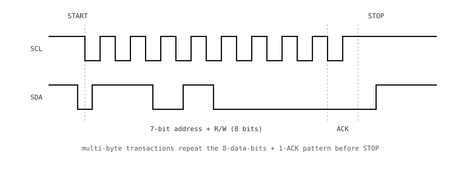

3.23. Podstawy I2C¶
I2C (Inter-Integrated Circuit, wymawiane „I-kwadrat-C” lub „I-dwa-C”) to dwuprzewodowa magistrala szeregowa zaprojektowana do połączeń krótkiego zasięgu między układami na tej samej płytce. Pod względem priorytetów plasuje się między SPI a UART: wolniejsza niż SPI, ale oszczędniejsza w piny, oraz adresowana (wiele urządzeń na tych samych dwóch przewodach), podczas gdy SPI wymaga dedykowanej linii CS na każde urządzenie.
I2C to magistrala pierwszego wyboru dla sensorów o niskiej szybkości – akcelerometrów, czujników temperatury, czujników wilgotności, magnetometrów, zegarów czasu rzeczywistego, pamięci EEPROM – gdzie oszczędność pinów i prostota magistrali liczą się bardziej niż surowa przepustowość.
3.23.1. Dwa przewody, oba typu open-drain¶
Magistrala I2C ma tylko dwa sygnały:
SCL (zegar szeregowy). Sterowany przez kontroler (przez większość czasu).
SDA (dane szeregowe). Sterowany przez to urządzenie, które akurat „mówi” – kontroler podczas adresu i wysyłanych danych, urządzenie peryferyjne podczas odczytów i bitów ACK.
Obie linie są typu open-drain: każde urządzenie na magistrali może ściągnąć linię do masy, ale nigdy nie wymusza na niej stanu wysokiego. Dwa rezystory podciągające na magistrali (zazwyczaj 2.2 kΩ do 10 kΩ do szyny zasilania) podciągają linie do stanu wysokiego, gdy nikt nie ściąga ich w dół. Zachowanie typu wired-OR wynika właśnie z tego – wygrywa każde urządzenie, które ściągnie linię w dół, a stan wysoki oznacza po prostu „nikt nie mówi”.
Wewnętrzne rezystory podciągające mikrokontrolera na jego pinach SCL i SDA zwykle nie są wystarczająco mocne, aby samodzielnie pełnić rolę rezystorów podciągających magistrali; zazwyczaj potrzebne są zewnętrzne rezystory na magistrali. Wiele płytek rozszerzeń z sensorami ma je już wbudowane; przed dodaniem kolejnych sprawdź kartę katalogową.
3.23.2. Transakcja¶
Każda transakcja I2C ma ten sam schemat:

Transakcja I2C: START, 7-bitowy adres + R/W, ACK, rejestr, ACK, dane, NACK, STOP.¶
Wymiana przebiega bit po bicie:
START. Kontroler ściąga SDA w dół, podczas gdy SCL jest jeszcze w stanie wysokim. To nietypowe zbocze informuje każde urządzenie na magistrali, że za chwilę rozpocznie się transakcja.
Adres + R/W. Kontroler wytaktowuje 7-bitowy adres urządzenia peryferyjnego, po którym następuje jeden bit odczytu/zapisu (
0dla zapisu,1dla odczytu).ACK / NACK. Po każdym bajcie odbiornik steruje linią SDA przez jeden takt zegara, aby potwierdzić ACK (stan niski) lub odrzucić NACK (stan wysoki). Przy bajcie adresu urządzenie peryferyjne potwierdza, jeśli rozpozna swój własny adres; jeśli żadne urządzenie nie potwierdzi, kontroler widzi NACK i wie, że tego adresu nie ma na magistrali.
Bajty danych. Po każdym następuje ACK od odbiornika. Przy zapisie urządzenie peryferyjne potwierdza każdy bajt; przy odczycie kontroler potwierdza każdy bajt, którego chce więcej, i odpowiada NACK na ostatni bajt, aby poinformować urządzenie peryferyjne, że ma przestać.
STOP. Kontroler zwalnia SDA do stanu wysokiego, gdy SCL jest w stanie wysokim, kończąc transakcję.
Powtórzony start (repeated start) to drugi START wystawiony bez STOP-u pomiędzy – kontroler zmienia kierunek (adres zapisu, a następnie adres odczytu) na tym samym urządzeniu peryferyjnym, nie oddając magistrali.
3.23.3. Adresowanie¶
7-bitowa przestrzeń adresowa obejmuje zakres 0x08 – 0x77; wartości na krańcach są zarezerwowane do celów specjalnych. Adres każdego urządzenia ustala projektant układu; wiele elementów pozwala zmienić kilka najmłodszych bitów na poziomie płytki (przez połączenie pinu do stanu wysokiego lub niskiego), tak aby dwa takie same sensory mogły działać na tej samej magistrali.
Jeśli dwa urządzenia współdzielą adres, nie ma sposobu na komunikację z jednym z nich bez zakłóceń ze strony drugiego, więc przed łączeniem elementów sprawdź kartę katalogową. i2c.scan() (omówione w I2C w kodzie) przeszukuje przestrzeń adresową i raportuje, które adresy odpowiadają, co jest standardowym sposobem na sprawdzenie, co znajduje się na magistrali.
3.23.4. Zalety i wady¶
Zalety i wady magistrali wyznaczają jej niszę:
Dwa piny dla wielu urządzeń. Pojedyncza para SCL/SDA może obsłużyć kilkanaście sensorów. SPI wymagałoby dodatkowego pinu CS na każde urządzenie.
Standardowe prędkości.
100 kHz(„tryb standardowy”) i400 kHz(„tryb szybki”) obejmują niemal każdy sensor.1 MHzjest osiągalne, ale zaczyna stawiać większe wymagania pojemności magistrali i doborowi rezystorów podciągających.Wolne w porównaniu z SPI. Wszystko, co przesyła więcej niż kilkaset kilobitów na sekundę, woli SPI.
Konflikty adresów. Dwa urządzenia o tym samym adresie na jednej magistrali to błąd sprzętowy, którego protokół nie potrafi obejść.